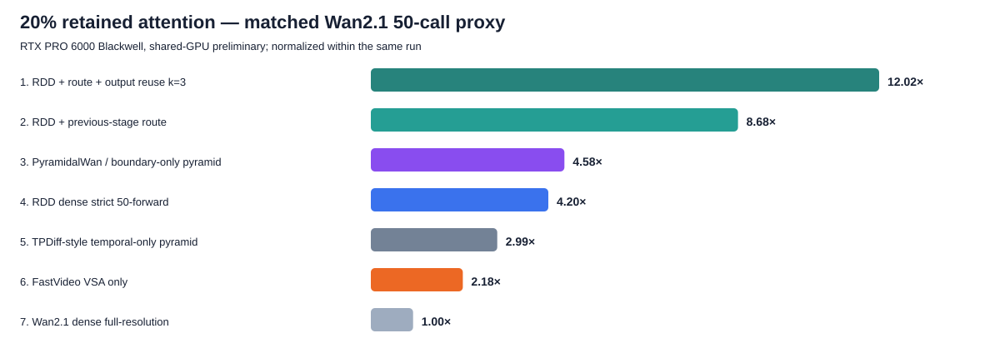
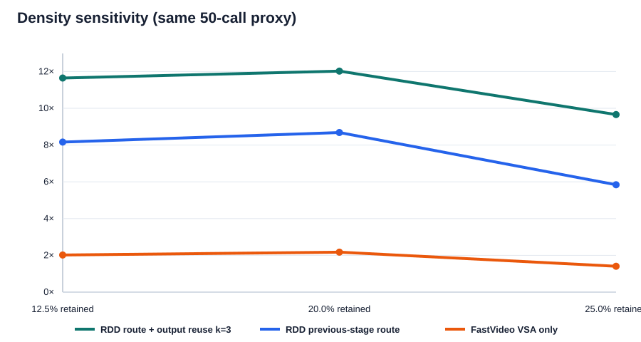

随机 BF16，无 checkpoint；Wan2.1-1.3B（dim 1536、FFN 8960、12 heads、30 layers）；81×448×832；RDD/VSA 共用同一未修改 FastVideo Triton64 sparse executor。共享 GPU 初测，额外峰值显存 2.01 GiB。
| rank | method | C/M/F calls | speedup | probability cache | status |
|---|---|---|---|---|---|
| 1 | RDD + route + attention-output reuse k=3 | 19/20/11 | 10.964× | 0.0 GiB | deployable proxy; quality unverified |
| 2 | RDD + route + probability reuse k=3 | 19/20/11 | 9.050× | 168.3 GiB | research prototype; memory-limited |
| 3 | RDD + previous-stage route | 19/20/11 | 7.713× | 0.0 GiB | our proposed method |
| 4 | PyramidalWan / boundary-only pyramid | 20/20/10 | 4.464× | 0.0 GiB | released path / matched proxy |
| 5 | RDD dense, strict 50-forward | 19/20/11 | 4.101× | 0.0 GiB | our planned method |
| 6 | TPDiff-style temporal-only pyramid | 20/20/10 | 2.500× | 0.0 GiB | matched Wan proxy |
| 7 | FastVideo VSA only | 0/0/50 | 2.021× | 0.0 GiB | released method |
| 8 | Wan2.1 dense full-resolution | 0/0/50 | 1.000× | 0.0 GiB | released baseline |
完整 attention probability cache 需约 168.3 GiB，不能作为主线；实测采用 O(ND) output reuse。
| rank | method | C/M/F calls | speedup | status |
|---|---|---|---|---|
| 1 | RDD + route + output reuse k=3 | 19/20/11 | 12.021× | quality unverified |
| 2 | RDD + previous-stage route | 19/20/11 | 8.683× | our proposed method |
| 3 | PyramidalWan / boundary-only pyramid | 20/20/10 | 4.579× | released path / matched proxy |
| 4 | RDD dense strict 50-forward | 19/20/11 | 4.197× | our planned method |
| 5 | TPDiff-style temporal-only pyramid | 20/20/10 | 2.989× | matched Wan proxy |
| 6 | FastVideo VSA only | 0/0/50 | 2.176× | released method |
| 7 | Wan2.1 dense full-resolution | 0/0/50 | 1.000× | released baseline |
RDD strict-50 记为19/20/11，PyramidalWan是20/20/10；RDD把一个最便宜的coarse call换成一个最贵的fine call。相同20/20/10时两者速度相同，drift成本可忽略。
不是VSA-only，而是3-step DMD + VSA Sparse-Distill。
| rank | method | C/M/F calls | speedup vs dense Wan50 | status |
|---|---|---|---|---|
| 1 | RDD distilled 2/2/1 + previous-stage route | 2/2/1 | 93.828× | hypothetical until trained |
| 2 | PyramidalWan DMD 2/2/1 | 2/2/1 | 45.786× | released method |
| 3 | RDD distilled 2/2/1 dense | 2/2/1 | 45.786× | hypothetical until trained |
| 4 | FastVideo DMD3 + VSA | 0/0/3 | 36.267× | released method |
| 5 | Pyramid Flow 10/10/10 schedule on Wan proxy | 10/10/10 | 4.780× | official schedule / matched Wan proxy |
FastVideo DMD3+VSA为36.267×代理；VSA-only为2.176×。前者的大部分额外加速来自50→3 calls。
| retained | RDD route+reuse | RDD route | FastVideo VSA-only |
|---|---|---|---|
| 12.5% | 11.645× | 8.161× | 2.019× |
| 20.0% | 12.021× | 8.683× | 2.176× |
| 25.0% | 9.659× | 5.842× | 1.406× |

20% 在共享 GPU 上反而比 12.5% 快属于并发训练/时钟/autotune 噪声；方法大排序可参考，density 的精确差值须独占 GPU 重跑。
| retained | dense SDPA ms | same sparse executor ms | VSA online router ms |
|---|---|---|---|
| 12.5% | 33.220 | 9.786 | 0.444 |
| 20.0% | 33.220 | 8.104 | 0.493 |
| 25.0% | 33.220 | 19.619 | 0.443 |
20% route lifting：coarse→middle 0.04010 ms；middle→fine 0.01618 ms。所有 route 均与 CPU reference 逐项相等；reuse kernel 最大绝对误差为 0。
| rank | method | C/M/F calls | speedup |
|---|---|---|---|
| 1 | RDD + route + output reuse k=3 — coarse-heavy 30/15/5 (+ endpoints) | 31/16/6 | 19.835× |
| 2 | RDD + previous-stage route — coarse-heavy 30/15/5 (+ endpoints) | 31/16/6 | 14.372× |
| 3 | RDD + route + output reuse k=3 — strict 18/19/10 (+ endpoints) | 19/20/11 | 12.021× |
| 4 | RDD + route + output reuse k=3 — balanced 20/20/10 (+ endpoints) | 21/21/11 | 11.917× |
| 5 | RDD + previous-stage route — strict 18/19/10 (+ endpoints) | 19/20/11 | 8.683× |
| 6 | RDD + previous-stage route — balanced 20/20/10 (+ endpoints) | 21/21/11 | 8.609× |
| 7 | RDD dense — coarse-heavy 30/15/5 (+ endpoints) | 31/16/6 | 7.290× |
| 8 | RDD + route + output reuse k=3 — fine-heavy 10/15/25 (+ endpoints) | 11/16/26 | 5.768× |
| 9 | RDD dense — strict 18/19/10 (+ endpoints) | 19/20/11 | 4.197× |
| 10 | RDD dense — balanced 20/20/10 (+ endpoints) | 21/21/11 | 4.178× |
| 11 | RDD + previous-stage route — fine-heavy 10/15/25 (+ endpoints) | 11/16/26 | 4.068× |
| 12 | RDD dense — fine-heavy 10/15/25 (+ endpoints) | 11/16/26 | 1.873× |
coarse-heavy 更快不代表质量更好。
Pyramid Flow 官方 scheduler 已在无 checkpoint 条件下实际导入运行，确认三阶段各 10 个 timestep；其不同骨干的原始毫秒没有混入公平排名。
完整细节、方法定义、限制和文件位置见同目录 Markdown。